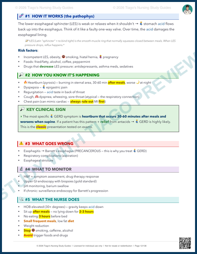

Adult Health
Final Prep
GI is live now: two Adult Health Final videos, GI My Notes, and a Final GI flashcard deck. Neuro and MSK/Ortho stay staged until they are public-ready.
GI final-review home
Start with the video that matches the weak spot, keep GI My Notes open beside it, then drill the Final GI cards while the map is fresh.

Video 1 · GI live
GI Upper/Lower Crash Course
GERD, PUD, H. pylori, hiatal hernia, gastritis, IBS vs IBD, UC vs Crohn, toxic megacolon, diverticulitis, obstruction, and colorectal screening.

Video 2 · GI live
Liver, Pancreas, and Gallbladder Crash Course
Cirrhosis, ascites, varices, hepatic encephalopathy, lactulose, hepatitis A/B/C, pancreatitis, cholecystitis, and domino chains.
Liver, Pancreas, Gallbladder Crash Course
Flip Final GI cardsStudy loop
1 · Watch
Upper/Lower GI
Use this for reflux, ulcers, IBS/IBD, obstruction, and colorectal screening.
1 · WatchLiver/Pancreas/Gallbladder
Use this for cirrhosis, varices, encephalopathy, pancreatitis, and cholecystitis.
2 · My NotesGI My Notes
Use the packet as the map while the videos explain the chains and priority traps.
3 · DrillFinal GI flashcards
32 high-yield cards for Upper GI, Lower GI, liver, pancreas, gallbladder, emergencies, labs, and nursing priorities.
Next study rooms
These are prepared spaces for tomorrow's recording flow. They are intentionally staged until the video, My Notes preview, and flashcards are public-safe.
Neuro final prep
Reserved for the embedded Neuro video, Neuro My Notes preview, and Neuro final flashcards after recording and QA. Not linked as a public video yet. Not sold as a public product yet.
MSK/Ortho final prep
Reserved for the embedded Ortho video, Ortho My Notes preview, and Ortho final flashcards after recording and QA. Not linked as a public video yet. Not sold as a public product yet.
What is ready vs next
Ready
GI final deck
Final-specific GI cards are live in the unified flashcard system. This is separate from the older Quiz 3 GI pharmacology deck.
RequestMissing GI card
If a GI final topic still feels missing, send it through the request page so it can become a card, post, or review section.
Next laneNeuro final prep
Neuro has a strong packet candidate, but it is not linked here as a public product or video lane yet.
Next after NeuroMSK/Ortho final prep
MSK/Ortho is staged, not fake-ready. It gets linked only after the public-safe packet and study loop are finished.
Preview the packet
See how GI My Notes is laid out.
GI My Notes is built for follow-along studying: visual pages, priority boxes, comparison tables, and practice-style prompts that match the two GI final-review videos.
Preview shows sample format, not the full packet. No actual exam or ATI questions. No score promises.



STUDY PACKS
Current packs now, final pack later
The GI My Notes packet is live for the final push. Existing Adult Health review and practice exams remain available too.
Gumroad links are my own study products, not affiliate links.
What gets added when new material is ready
- Video link and thumbnail after each YouTube upload is live.
- GI review sheet, Gumroad link, and Final GI flashcards are live; Neuro and MSK/Ortho links stay hidden until public-safe.
- Flashcards only after cards are searchable and tested on phone and desktop.
- Blog notes only after the explanation is cleaned for public wording.